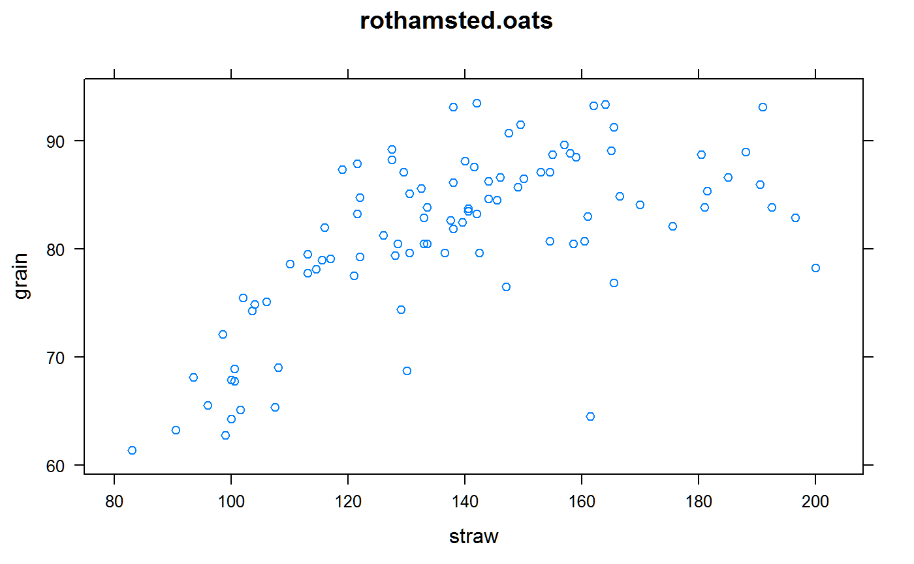

rothamsted.oats.RdRCB experiment of oats, straw and grain, 9 fertilizer treatments
data("rothamsted.oats")
A data frame with 96 observations on the following 6 variables.
blockblock
trtfertilizer treatment with 9 levels
graingrain, pounds per plot
strawstraw, pounds per plot
rowrow
colcolumn
Oats (Grey Winter) grown at Rothamsted, Long Hoos field 1926.
Values of grain and straw are actual weights in pounds. Each plot was 1/40 acre. The plot dimensions are not given, but the Rothamsted report shows the field being square.
The treatment codes are: OA,OB,OC,OD = No top dressing. E/L = Early/late application. S/M = Sulphate or muriate of ammonia. 1/2 = Single or double dressing.
Rothamsted Report 1925-26, p. 146. http://www.era.rothamsted.ac.uk/eradoc/article/ResReport1925-26-138-155 Electronic version of data supplied by David Clifford.
McCullagh, P. and Clifford, D., (2006). Evidence for conformal invariance of crop yields, Proceedings of the Royal Society A: Mathematical, Physical and Engineering Science, 462, 2119--2143. http://doi.org/10.1098/rspa.2006.1667
library(agridat) data(rothamsted.oats) dat <- rothamsted.oats libs(lattice) xyplot(grain~straw, dat, main="rothamsted.oats") # traits are correlated# compare to summary at bottom of page 146, first 3 columns libs(dplyr) dat = mutate(dat, nfert=trt, # number of fertilizer applications nfert=recode(nfert, oa="None", ob="None", oc="None", od="None", "1se"="Single", "1sl"="Single", "1me"="Single", "1ml"="Single", "2se"="Double", "2sl"="Double", "2me"="Double", "2ml"="Double")) # English ton = 2240 pounds, cwt = 112 pounds # multiply by 40 to get pounds/acre # divide by: 112 to get hundredweight/acre, 42 to get bushels/acre # NOTE! Avoid pipe operator in Rd examples! dat <- group_by(dat, nfert) dat <- summarize(dat, straw=mean(straw), grain=mean(grain)) dat <- mutate(dat, straw= straw * 40/112, grain = grain * 40/42) ## # A tibble: 3 x 3 ## nfert straw grain ## <fct> <dbl> <dbl> ## 1 Single 50.3 78.9 ## 2 Double 53.7 77.7 ## 3 None 44.1 75.4 libs(desplot) desplot(grain~col*row, dat, out1=block, text=trt, cex=1, shorten=FALSE, aspect=1, main="rothamsted.oats")#> Error in checkvars(text.string, dn): Could not find 'trt' in the data frame.desplot(straw~col*row, dat, out1=block, text=trt, cex=1, shorten=FALSE, aspect=1, main="rothamsted.oats")#> Error in checkvars(text.string, dn): Could not find 'trt' in the data frame.